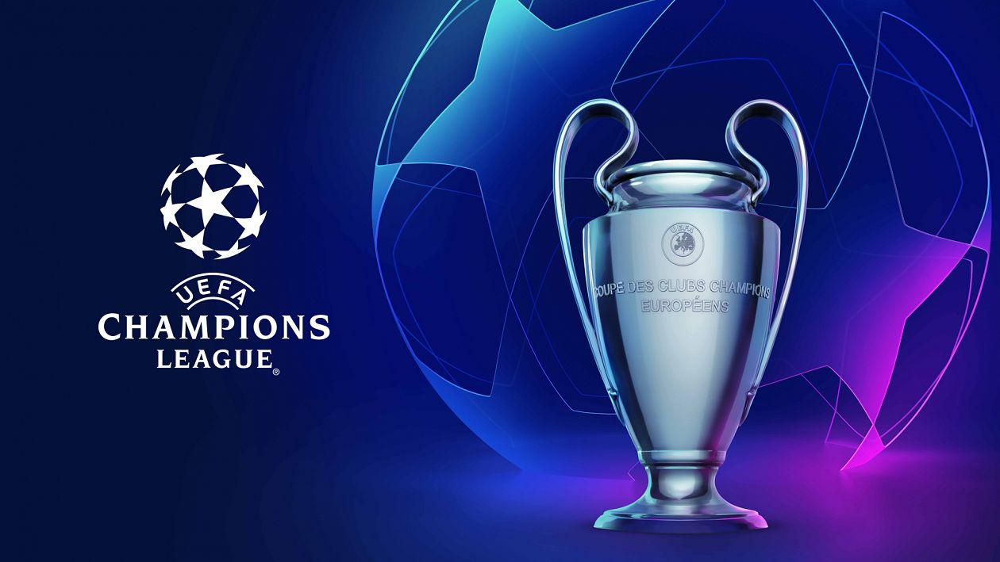

Arsenal's 24/25 EPL Campaign
Arsenal's 2024–25 Premier League season has been a thrilling campaign marked by consistency, resilience, and attacking flair. Under the leadership of Mikel Arteta, the Gunners have shown remarkable growth, building on last season’s momentum with a deeper squad and a more refined tactical identity.
With standout performances from rising stars like Bukayo Saka and William Saliba, alongside the leadership of seasoned players such as Martin Ødegaard and Gabriel Jesus, Arsenal have maintained a strong title challenge.
Their form at the Emirates Stadium has been formidable, and crucial away wins against top rivals have highlighted their championship credentials. As the season enters its final stretch, Arsenal remain firmly in contention for the Premier League crown, reigniting hopes among fans for their first league title since 2004.
24/25 EPL Season Fixtures
Premier League 2024–25
| Date |
Opponent |
Venue |
Result |
Score |
| 17 Aug 2024 | Wolves | Home | Win | 3–1 |
| 24 Aug 2024 | Aston Villa | Away | Win | 0-2 |
| 31 Aug 2024 | Brighton | Home | Win | 1–1 |
| 15 Sep 2024 | Spurs | Away | Loss | 0–1 |
| 22 Sep 2024 | Manchester City | Away | Loss | 2–2 |
| 28 Sep 2024 | Leicester City | Away | Loss | 4–2 |
| 05 Oct 2024 | Southampton | Away | Loss | 3–1 |
| 19 Oct 2024 | AFC Bournemouth | Away | Loss | 2–0 |
| 27 Oct 2024 | Liverpool FC | Away | Loss | 2–2 |
| 02 Nov 2024 | Newcastle United | Away | Loss | 0–1 |
| 10 Nov 2024 | Chelsea | Away | Loss | 1–1 |
| 23 Nov 2024 | Nottingham Forest | Away | Loss | 3-0 |
| 30 Nov 2024 | West Ham United | Away | Loss | 5-2 |
| 04 Dec 2024 | Manchester United | Away | Loss | 2-0 |
| 08 Dec 2024 | Fulham | Away | Loss | 1–1 |
| 14 Dec 2024 | Everton | Away | Loss | 0-0 |
| 21 Dec 2024 | Crystal Palace | Away | Loss | 5-1 |
| 27 Dec 2024 | Ipswitch Town | Away | Loss | 1–3 |
| 01 Jan 2025 | Brentford | Away | Loss | 1–3 |
| 04 Jan 2025 | Brighton | Away | Loss | 1–3 |
| 15 Jan 2025 | Spurs | Away | Loss | 1–3 |
| 18 Jan 2025 | Aston Villa | Away | Loss | 1–3 |
| 25 Jan 2025 | Wolves | Away | Loss | 1–3 |
| 02 Feb 2025 | Manchester City | Away | Loss | 1–3 |
| 15 Feb 2025 | Leicester City | Away | Loss | 1–3 |
| 22 Feb 2025 | West Ham United | Away | Loss | 1–3 |
| 26 Feb 2025 | Nottingham Forest | Away | Loss | 1–3 |
| 09 March 2025 | Manchester United | Away | Loss | 1–3 |
| 16 March 2025 | Chelsea | Away | Loss | 1–3 |
| 01 April 2025 | Fulham | Away | Loss | 1–3 |
| 05 April 2025 | Everton | Away | Loss | 1–3 |
| 12 April 2025 | Brentford | Away | Loss | 1–3 |
| 20 April 2025 | Ipswich Town | Away | Loss | 1–3 |
| 23 April 2025 | Crystal Palace | Away | Loss | 1–3 |
| 03 May 2025 | Everton | Away | Loss | 1–3 |
| 11 May 2025 | Liverpool | Away | Loss | 1–3 |
| 18 May 2025 | Newcastle United | Away | Loss | 1–3 |
| 25 May 2025 | Southampton | Away | Loss | 1–3 |

Arsenal's 24/25 UCL Campaign
Arsenal's return to the UEFA Champions League in the 2024–25 season has been nothing short of electrifying. Under the guidance of Mikel Arteta, the Gunners have impressed on the European stage, combining tactical maturity with fearless attacking play.
In the group stage, Arsenal topped their group with commanding performances against seasoned continental sides, showcasing their strength and squad depth. Players like Martin Ødegaard, Gabriel Martinelli, and Declan Rice have been instrumental in orchestrating key victories, while the defensive stability provided by William Saliba and Ben White has proven vital.
Their thrilling knockout stage run has reignited hopes of European glory, with fans dreaming of lifting the prestigious trophy for the first time. As Arsenal prepare for the latter stages of the competition, their confidence, chemistry, and hunger suggest they are serious contenders to be crowned Champions of Europe.
24/25 UCL Fixtures
Champions League 2024–25
| Date |
Opponent |
Venue |
Result |
Score |
Stage |
| 19 Sep 2024 | Atalanta | Away | Draw | 0–0 | League Phase |
| 01 Oct 2024 | Paris SG | Home | Win | 2–0 | League Phase |
| 22 Oct 2024 | Shaktar Donetsk | Home | Win | 1–0 | League Phase |
| 06 Nov 2024 | Inter Milan | Away | Loss | 0-1 | League Phase |
| 26 Nov 2024 | Sporting CP | Away | Win | 5-1 | League Phase |
| 11 Dec 2024 | Monaco | Home | Win | 3–0 | League Phase |
| 22 Jan 2025 | Dinamo Zagreb | Home | Win | 3–0 | League Phase |
| 29 Jan 2025 | Girona | Away | Win | 2–1 | League Phase |
| 04 Mar 2025 | PSV Eindhoven | Away | Win | 7–1 | Round of 16 |
| 12 Mar 2025 | PSV Eindhoven | Home | Draw | 2-2 | Round of 16 |
| 08 Apr 2025 | Real Madrid | Home | Win | 3–0 | Quarter-final |
| 16 Apr 2025 | Real Madrid | Away | Win | 2–1 | Quarter-final |
| 29 Apr 2025 | Paris SG | Home | Loss | 0–1 | Semi-final |
| 07 May 2025 | Paris SG | Away | Loss | 1–2 | Semi-final |